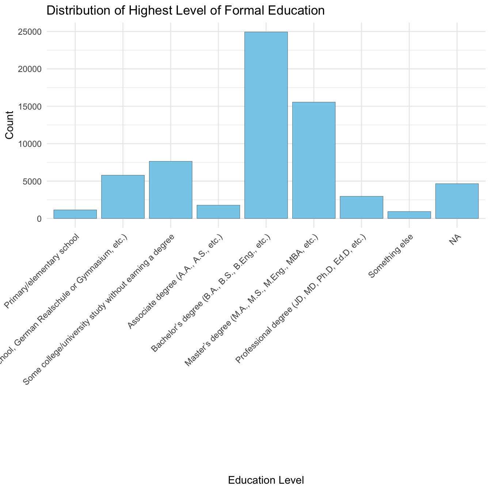
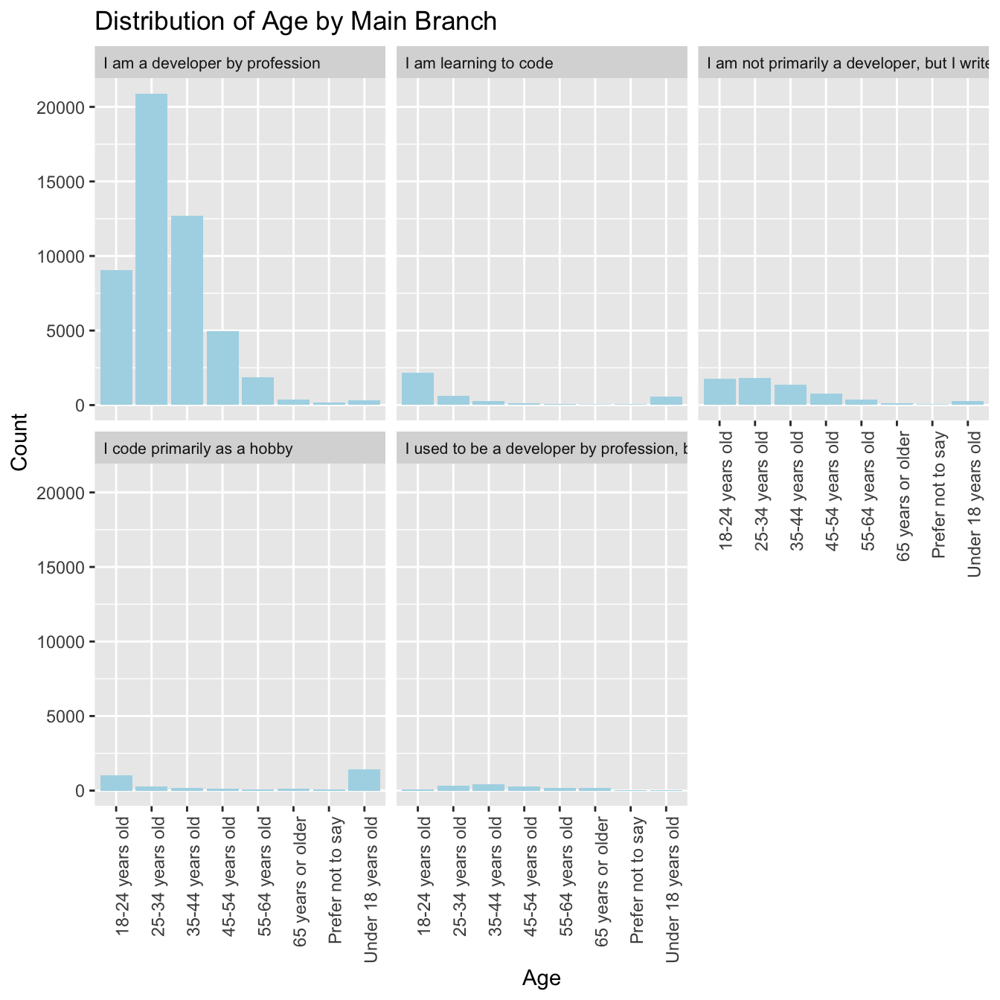
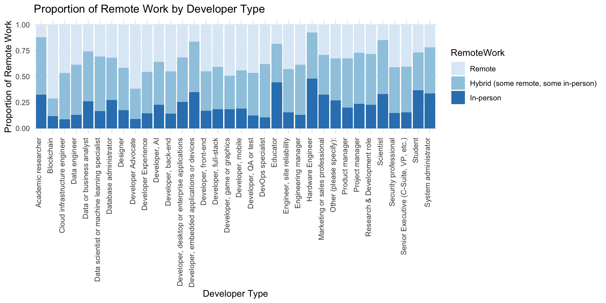
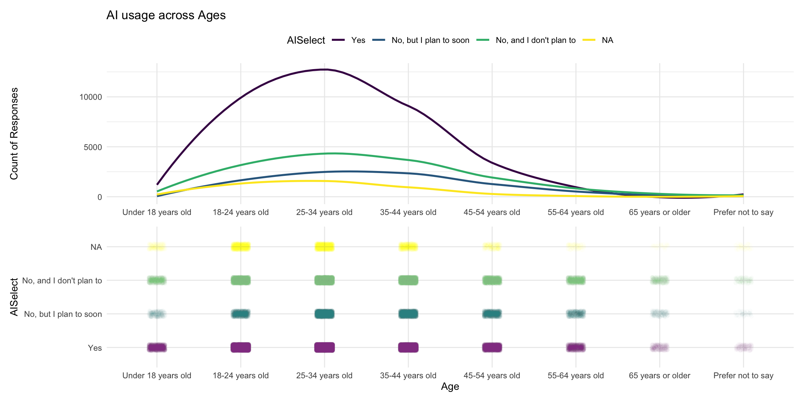

The survey data covers Stack Overflow users across varying education levels. The distribution of highest level of education obtained is plotted below.
Code
selected$EdLevel <-factor(selected$EdLevel, levels =c("Primary/elementary school", "Secondary school (e.g. American high school, German Realschule or Gymnasium, etc.)","Some college/university study without earning a degree","Associate degree (A.A., A.S., etc.)","Bachelor’s degree (B.A., B.S., B.Eng., etc.)","Master’s degree (M.A., M.S., M.Eng., MBA, etc.)","Professional degree (JD, MD, Ph.D, Ed.D, etc.)","Something else"))ggplot(selected, aes(x = EdLevel)) +geom_bar(fill ="skyblue", color ="black", size=0.1) +labs(title ="Distribution of Highest Level of Formal Education",x ="Education Level",y ="Count" ) +theme_minimal() +theme(axis.text.x =element_text(angle =45, hjust =1))
Warning: Using `size` aesthetic for lines was deprecated in ggplot2 3.4.0.
ℹ Please use `linewidth` instead.

The data highlights that StackOverflow caters primarily to a highly educated audience, with over 40,000 individuals holding advanced degrees. However, the presence of nearly 16,000 respondents with lower levels of formal education and more unconventional paths demonstrates that the platform still attracts a diverse range of learners and practitioners. This diversity showcases the platform’s appeal not only as a resource for trained developers but also for self-taught individuals and those transitioning from non-traditional educational backgrounds. Given this distribution, education may be a key variable in distinguishing between groups of opinions on AI.
Most survey respondents were in the Software Development industry. Fintech as well as Internet, Telecomm or Information Services are also prominent, reflecting the growing importance of digital financial services and communication technologies. Banking/Financial Services, Healthcare, Manufacturing, and Retail and Consumer Services are moderately sized. Sectors like Government and Media & Advertising Services have smaller representations, suggesting either niche markets or less emphasis compared to larger sectors. Higher Education, Transportation, or Supply Chain, and Computer Systems Design Services are similarly sized. The inclusion of traditionally non-tech industries like Healthcare, Government, and Retail shows that technology professionals are present across diverse fields. The dominance of tech industries is expected given the focus on StackOverflow, but it is interesting to observe the growing presence of coding-based methods in sectors such like Energy.
ggplot(selected, aes(x = Age)) +geom_bar(fill='lightblue') +facet_wrap(~ MainBranch) +labs(title ="Distribution of Age by Main Branch",x ="Age",y ="Count")+theme(axis.text.x =element_text(angle =90, hjust =1),strip.text =element_text(size =8, hjust =0, vjust =0.5, lineheight =1.2))

Majority of respondents are professional developers, with a right-skew, as most developers fall within the 18-44 age range, with the modal range being 25-34 years. This indicates a strong presence of younger professionals in the tech industry, likely driven by increasing demand for tech skills across industries. Those who code primarily as a hobby or are learning to code represent significantly smaller proportions of the total respondents. Interestingly, their distribution skews heavily toward the 18-24 age group, reflecting a pipeline of aspiring developers or those exploring programming as part of their education or career. On the other hand, respondents who occasionally code as part of their work or studies show a broader age distribution, indicating coding’s growing utility as a secondary skill in non-tech professions. Former professional developers are a small segment and predominantly fall in older age brackets, likely indicating transitions to managerial or non-coding roles.
3.1.5 Average Years of Coding Experience by Development Type
Code
avg_years_code_pro <- selected %>%group_by(DevType) %>%summarize(avg_years_code_pro =mean(as.numeric(YearsCodePro), na.rm =TRUE))avg_years_code_pro <- avg_years_code_pro %>%mutate(DevType =fct_explicit_na(DevType, na_level ="NA")) %>%mutate(DevType =fct_rev(DevType)) # Reverse factor levelsggplot(avg_years_code_pro, aes(x = avg_years_code_pro, y =reorder(DevType, avg_years_code_pro))) +geom_point(color ="skyblue", size =2) +# Use points instead of barslabs(x ="Average Years of Professional Coding", y ="Developer Type", title ="Avg. Years of Professional Coding by Developer Type") +theme_minimal() +# Cleaner themetheme(axis.text.y =element_text(size =8), # Adjust y-axis text sizeaxis.title =element_text(size =10)) # Adjust axis title size
This graph represents the suspected – those with most years of professional coding experience hold higher positions like C-Suite, Managers, Product Managers (exceeding 15 years in coding) whereas those with fewer years of coding experience tend to be Students and more entry-level roles such as Developers and Data Analysts. We see that those with lowest average experience levels are students or entry-level professionals, and with progression, the roles become more specialized, indicating the natural tendency to specialize over one’s career. Interestingly, however, certain specialized roles like Blockchain Developers require relatively less experience, suggesting the quick growth of these newer fields. Another interesting observation is the fairly high experience among Marketing or Sales professionals, which may be attributed to the advent of digital marketing and leveraging code to analyze market trends. With a wide range of the average coding experience, it would be interesting to observe sentiment regarding both StackOverflow and AI as aids to coding.
3.1.6 Remote Work Behavior by Development Type
Code
RemoteWork_order <-c('Remote', 'Hybrid (some remote, some in-person)', 'In-person')selected$RemoteWork <-factor(selected$RemoteWork, levels = RemoteWork_order, ordered =TRUE)filtered <- selected |>filter(!is.na(DevType) &!is.na(RemoteWork))ggplot(filtered, aes(x = DevType, fill = RemoteWork)) +geom_bar(position ="fill") +scale_fill_brewer(palette ="Blues") +labs(x ="Developer Type", y ="Proportion of Remote Work", title ="Proportion of Remote Work by Developer Type") +theme_minimal() +theme(axis.text.x =element_text(angle =90, hjust=1, vjust=-0.01))

Few roles require in-person presence, including Hardware Engineers, Embedded Aplplications Developers and of course Educators and Students. Certain other roles are extremely open to Remote work, including Blockchain developers, Developer Advocates, and Game & Graphics Developers. Across roles, there is a significant proportion of hybrid employees, which is a common post-Covid development. Given these distributions, we explore questions regarding AI usage, and whether remote work tends to create more positive sentiment and adoption.
3.2 StackOverflow Usage
StackOverflow is driven primarily through user contributions. It has been the go-to for development-related knowledge-sharing, where active participation is essential. From posting questions to answering queries to voting on content, user participation drives the platform’s benefits and success. We begin by analyzing the relationship between StackOverflow visits and participation to get insights into user engagement and community dynamics.
3.2.1 Visits versus Participation
Code
SOVisitFreq_order <-c('Less than once per month or monthly', 'A few times per month or weekly', 'A few times per week', 'Daily or almost daily', 'Multiple times per day')selected$SOVisitFreq <-factor(selected$SOVisitFreq, levels = SOVisitFreq_order, ordered =TRUE)SOPartFreq_order <-c('I have never participated in Q&A on Stack Overflow', 'Less than once per month or monthly', 'A few times per month or weekly', 'A few times per week', 'Daily or almost daily', 'Multiple times per day')selected$SOPartFreq <-factor(selected$SOPartFreq, levels = SOPartFreq_order, ordered =TRUE)selected_vf_pf <- selected %>%filter(!is.na(SOVisitFreq) &!is.na(SOPartFreq))ggplot(selected_vf_pf, aes(x = SOVisitFreq, fill = SOPartFreq)) +geom_bar(position ="fill", color ="black", size=0.1) +labs(x ="Visit Frequency", y ="Proportion", fill ="Participation Frequency",title ="Relationship Between Visit and Participation Frequency") +scale_x_discrete(labels =wrap_format(10))
We see a natural positive correlation between the visit frequency and participation frequency of StackOverflow users. As there is higher visitation, there is naturally greater participation. It is interesting to see that even among those that visit StackOverflow multiple times per day, nearly a quarter have never participate. These users that passively consume content may be prone to shifting towards AI tools for problem solving. Continuation of such practices may lead to a potential systemic issue, as most large language models train on online data, which relies heavily on user contributions. A decline in participation could be detrimental to growth, making it pivotal to maintain a sense of community.
3.2.2 ‘Community’ Sentiment
By faceting the same graph on community, we explore the impact this feeling of community may have on participation.
Code
SOComm_order <-c('No, not at all', 'No, not really', 'Not sure', 'Neutral', 'Yes, somewhat', 'Yes, definitely')selected_vf_pf$SOComm <-factor(selected_vf_pf$SOComm, levels = SOComm_order, ordered =TRUE)selected_vf_pf <- selected_vf_pf |>filter(!is.na(SOComm))ggplot(selected_vf_pf, aes(x = SOVisitFreq, fill = SOPartFreq)) +geom_bar(position ="fill", color ="black", size=0.1) +labs(x ="Visit Frequency", y ="Proportion", fill ="Participation Frequency",title ="Relationship Between Visit and Participation Frequency") +theme(axis.text.x =element_text(angle =45, hjust =1)) +facet_wrap(~ SOComm)
We can see that indeed the users that feel like they’re part of the StackOverflow Community not only participate, but participate frequently no matter how often they visit. Those who answered “Yes, definitely” are represented across all levels of participation frequency but are especially prominent among the most active users, such as those participating “daily or almost daily” or “multiple times per day.” This suggests a strong connection between a sense of belonging and active engagement in the community. On the other hand, those that feel “No, not at all” or “No, not really” barely engage, withparticipation being limited to “less than once per month or monthly” or no participation at all. Even among those that visit frequently, a lack of community connection correlates with lower participation levels. This reiterates the previous point on fostering a sense of community to ensure continued contributions.
3.3 Artificial Intelligence Perceptions
We suspect that the advent of AI has led to certain changes in user behavior, including potentially a shift away from using resources like StackOverflow and relying on LLM’s like GPT and Claude. Additionally, the subject of AI has sparked great debate in the context of being a threat. In this section, we analyze this behavior and these opinions in developers.
3.3.1 Interest in AI Integration
Code
AI_survey <-read.csv('data/parsed_AItools.csv')AI <-subset(AI_survey, select =-X)data_long <- AI %>%pivot_longer(cols =-index, names_to ="category", values_to ="value")ggplot(data_long, aes(x = index, y = category, fill = value)) +geom_tile() +scale_fill_viridis(option ="F", direction =-1) +# Color scalelabs(x ="Development Workflow", y ="AI Integration Interest", title ="Interest in Integrating AI into Development Activities") +scale_y_discrete(labels =c("Currently.Using"="Currently using", "Interested.in.Using"="Interested in using", "Not.interested.in.Using"="Not interested in using")) +# Relabel y-axistheme(axis.text.x =element_text(angle =45, hjust =1))
We see that a fairly high number of users is already using AI for writing code and, crucially in our context, for searching for answers and debugging and getting help. This reinforces the concerns raised in previous sections whilst also highlighting the benefits of AI. We see that across most domains, there is great interest in using AI if not already in use, especially to test code, learn about codebases, commit and review code, deploy and monitor code, predictive analytics and document code. However, more interestingly, there are 2 domains where there is little interest in incorporaitng AI, (i) project planning and (ii) deployment and monitoring. These perhaps represent the more evolved stages of tech jobs (i.e. roles of project managers and senior engineers) which are believed to still be more accurate when performed by humans.
Continuing this exploration, and since we observe a high usage of AI to search for answers, we observe the relationship between StackOverflow visits and AI Usage.
3.3.2 StackOverflow or AI?
Code
SOVisitFreq_order <-c('Less than once per month or monthly', 'A few times per month or weekly', 'A few times per week', 'Daily or almost daily', 'Multiple times per day')selected$SOVisitFreq <-factor(selected$SOVisitFreq, levels = SOVisitFreq_order, ordered =TRUE)filtered_data <- selected |>filter(!is.na(AISelect) &!is.na(SOVisitFreq))contingency_table <-table(filtered_data$SOVisitFreq, filtered_data$AISelect)mosaicplot(contingency_table, color=TRUE, shade=TRUE, las =2, main='Relationship between using SO and using AI',xlab='Using SO', ylab='Using AI')
We see, via the blue zone, that there is a significantly high number of people that currently use StackOverflow almost daily and plan to use AI in the near future. This is particularly interesting since it may represent the “shifting” population that we referred to earlier. There is also a higher than expected level of individuals that selected that they barely use SO and do not plan on using AI. This is expected since this likely represents the segment that is not frequently running into bugs or needs the community contribution. Interestingly, there are no significant proportion that uses StackOverflow often and concurrently uses AI often.
Continuing our previous exploration, we study the degrees to which there is interest in integrating AI into various parts of a development workflow.
3.3.3 (Future) AI in development workflows
Code
ai_next <-read.csv('data/ai_next.csv')likert(index ~ .,data=ai_next, ylab=NULL, ReferenceZero=3,as.percent=TRUE,main =list("Future AI integration into workflow",x=unit(.55, "npc")),strip=FALSE,par.strip.text=list(cex=.7))
We see that across the developement workflows, there is a strong positive sentiment to integrate AI in the future. Thus, the general sentiment across programmers is that adoption of AI across workflows likely to reduce redundant human work and boost productivity. There is a still a small portion, about 8-10% of survey takers, that still are unfavorable towards AI integration. We posit that perhaps this sentiment is a result of age and thereby comfort with “new” technology. To analyze this, we observe the behavior across age groups in already using AI tools.
3.3.4 Is age just a number?
Code
selected$AISelect <-factor(ifelse(is.na(selected$AISelect), "NA", as.character(selected$AISelect)),levels =c('Yes', 'No, but I plan to soon', 'No, and I don\'t plan to', 'NA'),ordered =TRUE)Age_order <-c("Under 18 years old", "18-24 years old", "25-34 years old", "35-44 years old", "45-54 years old", "55-64 years old", "65 years or older", "Prefer not to say")selected$Age <-factor(selected$Age, levels = Age_order, ordered =TRUE)ggplot(selected, aes(x = Age, y = AISelect)) +geom_jitter(aes(color = AISelect), width =0.1, height =0.1, alpha =0.01) +theme_minimal() +labs(y ="AISelect") +theme(legend.position ="none") -> p1counts <- selected %>%group_by(Age, AISelect) %>%summarize(Count =n(), .groups ="drop")ggplot(counts, aes(x = Age, y = Count, color = AISelect, group = AISelect)) +geom_smooth(method ="loess", se =FALSE) +theme_minimal() +labs(title ="AI usage across Ages",x ="Age",y ="Count of Responses" ) +theme(legend.position ="top", # Remove legendaxis.title.x =element_blank(), # Remove x-axis title ) -> p2p2 / p1

As we expected, we see that AI adoption into workflows amongst developers is most prevelant amongst young professionals. There is a right skew indicating that older people have adopted AI less. However, there is also a fair number of respondents that don’t and do not plan to use AI. It was the second most popular view amongst 25-34 year olds, which indicates a near-polarization when it comes to comfort with AI. As a secondary distinction, we check how these views vary by country.
3.3.5 AI Usage by Country
Code
aiselectcountry <-read.csv('data/AISelect_CountryCode.csv')ai_select_data <- aiselectcountry %>%filter(!is.na(AISelect)) %>%# Remove rows with missing datagroup_by(Country_Code) %>%# Group by countrysummarise(ThreatCount =sum(AISelect =="Yes", na.rm =TRUE), # Count how many think AI is a threatTotalCount =n(), # Count the total number of responsesProportionThreat = ThreatCount / TotalCount *100# Calculate the proportion )world <-ne_countries(scale ="medium", returnclass ="sf")world_data <-left_join(world, ai_select_data, by =c("iso_a3"="Country_Code"))ggplot(data = world_data) +geom_sf(aes(fill = ProportionThreat)) +scale_fill_viridis_c(name ="Proportion of AI Usage") +theme_minimal() +labs(title ="Proportion of AI Usage") +theme(legend.position ="bottom")
Lighter regions across the map highlight higher AI usage, include parts of Asia, Europe, and North America. We see that developed nations with robust technologies have typically adopted AI practices, with over 50% respondents already using AI. Interestingly, these stats are even higher for many developing countries across Asia including Mongolia, China, India. We finally want to check what determines this flow of AI sentiments.
3.3.6 Alluvial Diagram
Code
AIThreat_order <-c('No', 'Unsure', 'Yes')selected$AIThreat <-factor(selected$AIThreat, levels = AIThreat_order, ordered =TRUE)AISent_order <-c('Very unfavorable', 'Unfavorable', 'Unsure', 'Indifferent', 'Favorable', 'Very favorable')selected$AISent <-factor(selected$AISent, levels = AISent_order, ordered =TRUE)AIComplex_order <-c('Very poor at handling complex tasks', 'Bad at handling complex tasks', 'Neither good or bad at handling complex tasks', 'Good, but not great at handling complex tasks', 'Very well at handling complex tasks')selected$AIComplex <-factor(selected$AIComplex, levels = AIComplex_order, ordered =TRUE)AIAcc_order <-c('Highly distrust', 'Somewhat distrust', 'Neither trust nor distrust', 'Somewhat trust', 'Highly trust')selected$AIAcc <-factor(selected$AIAcc, levels = AIAcc_order, ordered =TRUE)filtered_data <- selected %>%filter(MainBranch =="I am a developer by profession") %>%filter(!is.na(AISelect) &!is.na(AISent) &!is.na(AIAcc) &!is.na(AIComplex) &!is.na(AIThreat))alluvial_data <- filtered_data |>group_by(AIThreat, AIComplex, AISent, AIAcc) |>summarise(Freq =n()) |>ungroup()
`summarise()` has grouped output by 'AIThreat', 'AIComplex', 'AISent'. You can
override using the `.groups` argument.